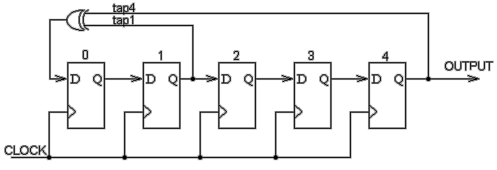
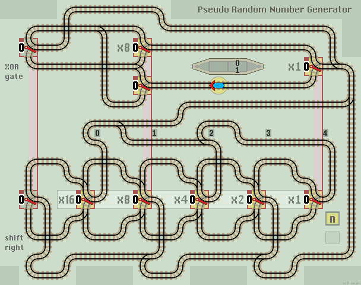

Random Number Generator
We can combine a shift right function with an XOR logic gate to create a train track layout capable of generating a pseudo random number sequence. Here is a typical circuit diagram of a 5-stage Linear Feedback Shift Register. By convention, the stages are labelled from left to right.
|  |
The XOR logic gate uses taps from stages 1 and 4 which gives a maximal 31 state cycle. We need a 6-stage shift register because the output from the XOR logic gate needs to be stored in an 'extra' position, until it can be shifted right. The circuit must never enter 00000 to avoid a lock-up state.
The circuit comprises an XOR Logic Gate above a Shift Right function below.
No need to clear points, just run!
| 
|
| Click layout to pause/run train | Click points to switch 0/1 | Click start circle to reset train/points |
| Lazy points switch between upper 0 or lower 1 branch lines Trains arriving on a branch line switch the point to that line |
|
| Sprung points allow branch line trains to join the main line All main line trains go straight ahead and never 'branch off' |
Operation
- Start train running from station.
- The n register cycles through a sequence of pseudo random numbers. It can be read each time the train passes through the station. Each number follows this maximal 31 step sequence:
| Step | x16 | x8 | x4 | x2 | x1 | Value |
| 1 2 3 4 5 6 7 8 9 10 11 12 13 14 15 16 17 18 19 20 21 22 23 24 25 26 27 28 29 30 31 |
1 0 1 0 1 1 1 0 1 1 0 0 0 1 1 1 1 1 0 0 1 1 0 1 0 0 1 0 0 0 0 |
0 1 0 1 0 1 1 1 0 1 1 0 0 0 1 1 1 1 1 0 0 1 1 0 1 0 0 1 0 0 0 |
0 0 1 0 1 0 1 1 1 0 1 1 0 0 0 1 1 1 1 1 0 0 1 1 0 1 0 0 1 0 0 |
0 0 0 1 0 1 0 1 1 1 0 1 1 0 0 0 1 1 1 1 1 0 0 1 1 0 1 0 0 1 0 |
0 0 0 0 1 0 1 0 1 1 1 0 1 1 0 0 0 1 1 1 1 1 0 0 1 1 0 1 0 0 1 |
16 8 20 10 21 26 29 14 23 27 13 6 3 9 24 28 30 31 15 7 19 25 12 22 11 5 18 9 4 2 1 |
Column x1 shows the platform the train arrives on. If you were waiting at the station and didn't know which step of the above cycle the circuit was in, you wouldn't be able to predict on which platform the next train would arrive. It would be pseudo random.
The train stating position ensures that either the x8 or the XOR lazy point is set to a 1 and so the shift register avoids the all zero lock-up state.
Other 2 tap maximal length Linear Feedback Shift Registers are:
| No of bits | Length of loop | Tap positions |
| 5 6 7 9 10 11 15 17 18 20 21 22 23 25 |
31 63 127 511 1,023 2,047 32,767 131,071 262,143 1,048,575 2,097,151 4,194,303 8,388,607 16,777,215 |
1 & 4 0 & 5 0 & 6 3 & 8 2 & 9 1 & 10 0 & 14 2 & 16 6 & 17 2 & 19 1 & 20 0 & 21 2 & 22 0 & 23 |
Extending from 5 to 25 bits, increases the time for each step by 5, but increases the complete cycle by half a million times. If the train runs at the same speed, then it will pass the station every 2.5 minutes, instead of every half minute, but the cycle repeat time will increase from 15.5 minutes to 80 years.